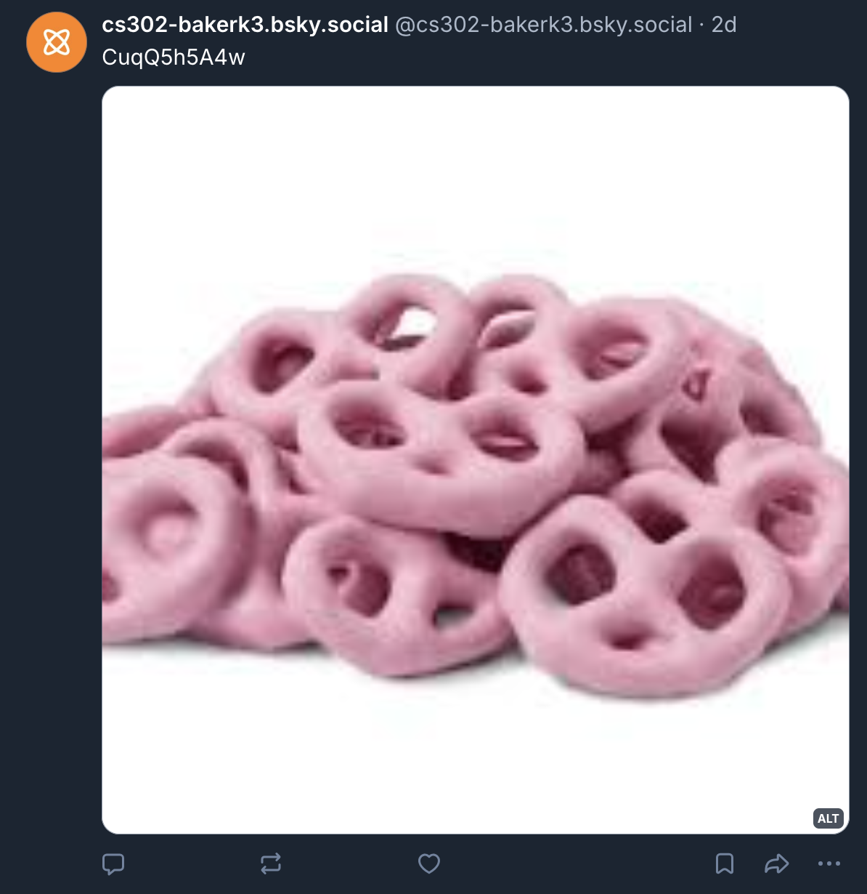
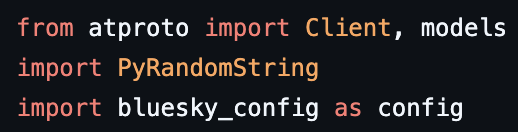
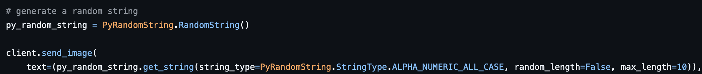

Deliverable 3: Social Media x Ethics
Construction: Bluesky Bot
See on Bluesky ->Text-Only Post


To post a text-only post on Bluesky, I relied on the ATProto API documentation to help create the client and send a post that had a sentence of text. I was eating raspberry yogurt covered pretzels while I was coding my bot, so that's where I got the idea for the content that the bot would post. I like to take inspiration from my environment.
Multimedia Post


To post a multimedia post on Bluesky, I again referenced the ATProto API documentation to help understand the process of sending an image while maintaining the aspect ratio, and including alt text. I decided to keep up the raspberry yogurt covered pretzel theme and found this image on google.
User Interaction


Liking another user's post was probably the most challenging part for me. I referenced the API and the other resources that Jean listed in the deliverable, but I also had to spend a good amount of time playing around with the syntax to make sure that I could actually like the post. Figuring out the AT URI was intimidating at first, but after looking at an example in the reading I was able to figure it out and construct it using the information in the post's URL. The print statement with the like reference was helpful for this, since I could see that my AT URI was referencing the correct post. In terms of design, I tried to make my code concise and decided to like the Bluesky post because it was the one account that my bot follows.
External Package

'" />

I spent some time looking up random Python packages online to try and find a simple one that I could incorporate into my bot's code. I found this one from Lakhya Jyoti Nath [https://pypi.org/project/pyrandomstring/] which had some basic documentation to work with to install the package, import it, and use it to generate a random string, which was very helpful. From there, I decided to make all of my multimedia posts have a text component that was a randomly generated string of characters using this package. I also updated my text-only post to reiterate that I love random strings.
Deconstruction: Bluesky Bot
When it came to the discussions in this unit, my thinking was slightly less challenged than in some of the previous class discussions. I think we were all starting from a place closer to consensus, generally speaking for most of the questions. Thinking about the first question we discussed, Should we care about the relations between humans and bots when making ethical judgements? Are these relations equally as important as human-human relations? My immediate thought was yes -- especially so as the bot's anthropoglossicness increases. This was corroborated by the pre-class reading, which helpfully gave an example of defining anthropoglossicness along a spectrum, which I think is a really good way of framing the intended behaviors of bots (Stieglitz et al., 2017). This seemed to be along the lines of what others in class were thinking, and I liked Jean's clarifying question about disclosure of bot identity. I think that is crucial to understanding human-bot relations online. Either way, I think it's important that we consider the ethics of these relationships, but it becomes especially ethically grey if bots are not disclosed as bots online.
For our next question, Is it ok for a bot to harm some people if it makes more people happy? Our class landed on there not really being a clear answer to this question, as is the case for a lot of ethical questions. I think there's inherent harm to some party in nearly every bot operation. I, for one, can't think of a bot that could be implemented that would only affect people positively; somebody always has to bear the cost of either creating the bot or the effects of its actions. The Social Bot Network reading for class solidified this idea for me, because it shows how relatively easy it is to employ malicious bots on a large, organized scale (Boshmaf et al., 2011). I agreed with Hudson who said that misleading people in any scenario is bad, so doing something like sharing fake content to raise awareness about a social issue is doing more harm than good. Klaus also commented that we can't really conclude the extent of the harm that a bot causes in a lot of real world scenarios, so that is one thing that makes this quesiton difficult to answer. I appreciated London's complicating question: Does freedom of speech go away when it's a bot? I think this will be important to consider now and in the future.
The question Would social media be a better place for more people if there were no bots at all? was really interesting to discuss. I went and came out with essentially the same opinion: Yes. Even though the botivist reading presented a really fascinating use case that showed how bots can be used to enact change for social good, thinking broadly about social media, I believe we would all be better off if there were less forces vying for our attention and engagement (Savage et al., 2016). Klaus brought up another good point, which was that bots are an amplification of existing power, so those who already have more resources will have easier access to using bots to serve their agenda. I appreciated one thing that Hudson and Adit touched on, which was the example of bots like the ones on Discord. These are bots that are mainly used as tools, and it is disclosed that they are bots. They are not anthropoglossic in most cases. I think the closer that bots can be to a tool or a feature that is equally available to all users and identified as a bot, the stronger an argument for use you can make.
My favorite quesiton from our discussion was definitely this: Is social media a platform or a product? I think this has become a really crucial question to answer (like in the case of the Meta trial right now), especially as we see more and more examples of digital enshittification taking place in our lifetime. I think, with the current state of things, social media is both a platform and a product. I really liked Dynamique's thought that we're in a transitional phase right now; social media started off with the intentions of being a platform, but we are increasingly seeing this transform into more of a product as monetization and commercialization become so ubiquitous online.
A lot of my lingering questions come from ones that my classmates posed. Specifically, I am still wondering about London's question regarding free speech, although that may potentially be out of the scope of our class. I also am wondering about the implications of a question that Harry posed: If people just believed that there were no bots online, would social media be a better place? Lastly, I am really interested in seeing how the Meta trial plays out and what the verdict comes back as. I think that that will help answer the question of whether social media (or at least Meta) is a platform or a product, which will surely have fascinating implications either way.
Works Cited
Boshmaf, Y., Muslukhov, I., Beznosov, K., & Ripeanu, M. (2011). The Socialbot Network: When Bots Socialize for Fame and Money. University of British Columbia. https://drive.google.com/file/d/1KXdSrGOE4Agi7ptVX3DOwUAb6cNybM3H/view
Savage, S., Monroy-Hernández, A., & Höllerer, T. (2016). Botivist: Calling Volunteers to Action using Online Bots. https://doi.org/10.1145/2818048.2819985
Stieglitz, S., Brachten, F., Ross, B., & Jung, A.-K. (2017). Do Social Bots Dream of Electric Sheep? A Categorisation of Social Media Bot Accounts. Australasian Conference on Information Systems. https://drive.google.com/file/d/1fKDixMYghZ8HlZR6YC_RYeERsGseWNWV/view